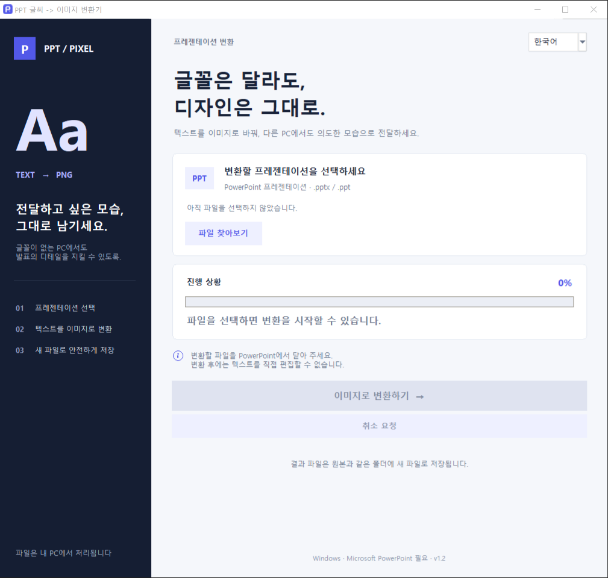

시작하기 전에, 파일을 한 번 더 확인
파일 선택과 변환 시작을 분리했습니다. 선택한 경로를 확인하고 준비가 되면 변환하세요. 숫자 진행률과 작은 창 스크롤도 지원합니다.
v1.3.1 · 출시
다른 PC에서도 의도한 모습으로. PPT의 텍스트를 이미지로 바꿔 발표용 사본을 준비하세요.
Windows 10 / 11 · Microsoft PowerPoint 필요


01내 PC에서 로컬 처리
02원본과 결과 파일 분리
03한국어 · English
FEATURES
새로운 작업 화면부터 부분 실패 안내까지, 변환 과정에서 사용할 수 있는 기능입니다.
파일 선택과 변환 시작을 분리했습니다. 선택한 경로를 확인하고 준비가 되면 변환하세요. 숫자 진행률과 작은 창 스크롤도 지원합니다.
복제 도형에서 이미지를 만든 뒤 성공한 경우에만 원본을 교체합니다. 회전과 겹침 순서도 보정하고, 복구에 실패하면 저장을 중단합니다.
변환하지 못한 항목이 있으면 경고합니다. 결과 옆의 JSON 보고서에서 변환 건수와 확인이 필요한 슬라이드·처리 단계를 확인할 수 있습니다.
CONVERSION REPORT
표·차트·SmartArt처럼 자동 변환하지 않는 객체도 확인 필요 항목으로 안내합니다.
{
"converted_count": 12,
"issues": [{
"slide": 3,
"stage": "unsupported",
"error": "Table, chart or SmartArt requires manual review"
}]
}HOW IT WORKS
파일 찾아보기 또는 Ctrl+O로 .ppt / .pptx 파일을 선택합니다.
대상 파일을 PowerPoint에서 닫고, 이미지로 변환하기를 누른 뒤 주의 사항을 확인합니다.
원본 폴더의 새 PPT와 보고서를 확인합니다. 일부 완료 경고가 있다면 해당 슬라이드를 검토하세요.
BEFORE YOU START
현재 Windows에 설치된 Microsoft PowerPoint 엔진을 사용합니다. 변환할 PC에서 원본 글꼴을 사용할 수 있어야 하며, 대상 PPT는 닫혀 있어야 합니다.
텍스트가 있는 도형 전체가 이미지로 바뀝니다. 편집·검색이 제한되므로 작업용 원본은 보관하고 전달용 사본으로 사용하세요.
그룹을 해제하며 표·차트·SmartArt는 자동 변환하지 않습니다. 마스터·노트·애니메이션·하이퍼링크 보존은 지원 범위에 포함되지 않습니다. 결과를 확인한 후 배포하세요.
텍스트를 이미지로 바꾸더라도 글꼴의 사용·배포 라이선스 조건이 면제되는 것은 아닙니다.
Microsoft PowerPoint가 설치된 Windows PC용
v1.3.1 설치 프로그램 다운로드 ↓설치 없는 실행 파일 받기두 실행 파일 모두 Microsoft PowerPoint가 필요합니다.
SHA-256 체크섬 전체 변경 사항 보기 ↗